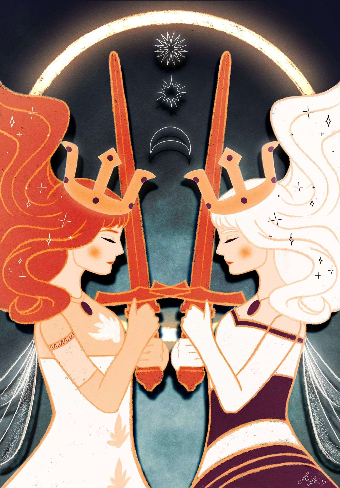
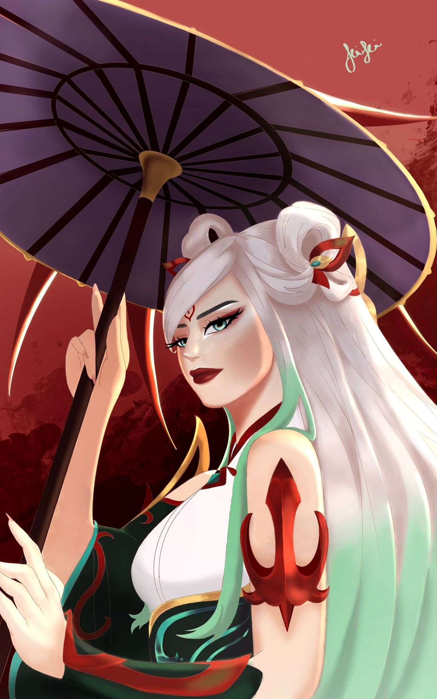
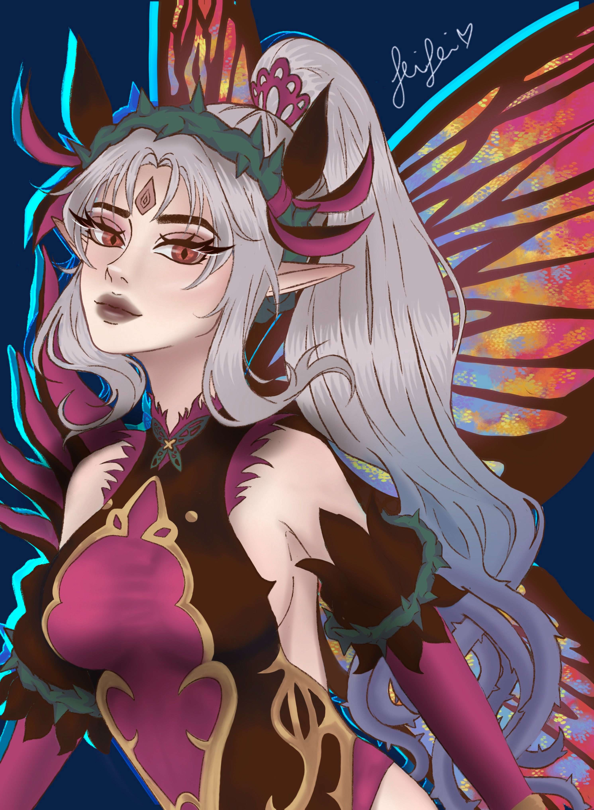

ILLUSTRAZIONI

Child of Light,
disegno digitale, 2023

Twirling Lotus,
disegno digitale, 2023

Myth Maker,
disegno digitale, 2023

Plumeria,
disegno digitale, 2022


Serie di tigri,
Matita su cartoncino liscio colorato, 2019
Studio sulla tecnica di disegno con matita B e matita bianca
per imparare a lavorare sull’intensità del tratto. La scelta
del supporto colorato enfatizza naturalmente il contrasto
tra figura e sfondo.